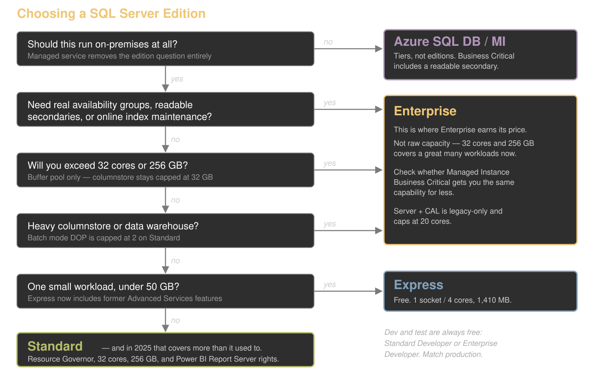

Pick Your Poison
Choosing the Right Edition of SQL Server
Kevin Feasel (@feaselkl)https://csmore.info/on/editions
Who Am I? What Am I Doing Here?


Motivation
Every edition choice costs you something: Enterprise costs money, Standard costs capability, Express costs headroom, and the free developer editions cost you compliance risk.
There is no free lunch here, so the goal is not to find the "best" edition. It is to choose deliberately and know what you gave up. On top of this, SQL Server 2025 introduces new considerations that affect these trade-offs.
Before We Start
I am not a licensing representative and this is not legal advice.
When real money is on the line, confirm with your licensing partner before you sign anything.
Agenda
- The 2025 Edition Landscape
- The Limits That Actually Bite
- The Second Axis: License Type
- Counting Cores and Staying Compliant
- Changing Editions
- When the Answer Isn't an Edition
- The Decision Framework
The 2025 Lineup
| Edition | Capacity | Notes |
|---|---|---|
| Enterprise | OS maximum | Full feature set |
| Standard | 4 sockets / 32 cores, 256 GB | Basic AGs only |
| Enterprise Developer | OS maximum | Free, non-production |
| Standard Developer | Matches Standard | NEW in 2025 |
| Evaluation | OS maximum | 180 days |
| Express | 1 socket / 4 cores, 1,410 MB | 50 GB max database |
| Web | Discontinued in 2025 | |
The Developer Editions Got Renamed
Developer edition is now Enterprise Developer.
Standard Developer is new in 2025 and carries the Standard feature set, so you can certify against what you will actually run in production.
If your dev/test estate or install automation references "Developer," it needs attention.
What Standard Actually Gained
- Compute: lesser of 4 sockets or 32 cores (was 24)
- Buffer pool: 256 GB (was 128 GB)
- Resource Governor, with full Enterprise functionality
- Power BI Report Server use rights
The asterisk: 256 GB is buffer pool only. Add to that columnstore segment cache (32GB) and memory-optimized data size per database (32 GB each).
Express Grew Up
Maximum database size raised from 10 GB to 50 GB.
Express with Advanced Services is discontinued. Base Express now includes everything it offered: SSDT, machine learning integration, and full-text search.
This meaningfully changes the ISV and embedded-application calculus.
Web Edition Is Gone
Web edition is discontinued in SQL Server 2025. The upgrade path is Enterprise or Standard.
Web was primarily a SPLA product, so the people genuinely affected are hosting and service providers rather than typical enterprises.
The Biggest Change Is Reporting
On-premises reporting consolidates under Power BI Report Server. No new SSRS versions will ship. SSRS 2022 is the last, supported through January 11, 2033.
The licensing part is the real news: PBIRS use rights now extend to Standard edition under any license type. Previously this required Enterprise plus active Software Assurance.
Also gone: DQS, MDS, and Reporting Services upgrades are all unsupported on 2025.
Demo Time
Agenda
- The 2025 Edition Landscape
- The Limits That Actually Bite
- The Second Axis: License Type
- Counting Cores and Staying Compliant
- Changing Editions
- When the Answer Isn't an Edition
- The Decision Framework
High Availability Is the Dividing Line
2025 did not move this.
Standard gets basic availability groups only: two replicas, one database, non-readable secondary.
Always On AGs, contained AGs, and distributed AGs remain Enterprise-only. FCI is capped at two nodes on Standard versus sixteen on Enterprise.
If you were waiting for 2025 Standard to give you real availability groups, it did not.
The Footnote That Ruins Your Warehouse
Batch mode degree of parallelism is limited to 2 on Standard and 1 on Express.
This is why "we bought Standard and our columnstore warehouse is slow" is a real support call.
Other Enterprise-Only Limits Worth Knowing
- Maintenance windows: online and resumable index operations, online schema change, online page and file restore, fast recovery
- Data warehouse: star join optimizations, parallel query processing on partitioned tables, global batch aggregation
- Scale: read-ahead, advanced scanning, AVX-512, memory-optimized TempDB metadata, NUMA-aware large pages
- Operations: parallel index maintenance, parallel consistency check (DBCC)
The Surprise: AI Is Not an Edition Feature
Native vector data type, DiskANN vector indexing, external models, local ONNX models, embedding generation, chunking.
All of it runs on Express.
Edition is not what gates AI in 2025. The PREVIEW_FEATURES database-scoped configuration is. Functionality like DiskANN indexing, local ONNX models, fuzzy string matching, and change event streaming all require it.
Agenda
- The 2025 Edition Landscape
- The Limits That Actually Bite
- The Second Axis: License Type
- Counting Cores and Staying Compliant
- Changing Editions
- When the Answer Isn't an Edition
- The Decision Framework
Your Edition Is No Longer the Only Axis
Two shops both running Enterprise 2025 can have different feature sets based on how they pay.
Three ways to hold a license:
- Perpetual license only
- License with Software Assurance or a SQL Server subscription
- Pay-as-you-go through Azure Arc
What SA or a Subscription Actually Buys
Gated behind SA or subscription via Azure Arc:
- Best Practices Assessment
- Point-in-time restore and automated backups to local storage
- Automatic updates, monitoring, client connection summary
- Extended Security Update subscription
Plus the licensing benefits: free version upgrades, the HA/DR passive replica benefit, unlimited virtualization, license-by-VM, and the 180-day dual-use benefit.
Pay-As-You-Go Is a Real Third Option
Per-core, per-hour, metered through Azure with no upfront license purchase.
Watch the Linux caveats:
- No automatic passive replica detection, so every instance bills as active
- Core count derived from the OS environment
- No connected-user verification on readable secondaries
What This Does to the Math
The comparison was never just Enterprise versus Standard. It is edition × license type.
Enterprise without Software Assurance has no "passive" replica benefit, no unlimited virtualization, no free version upgrades, and no Arc assessment, PITR, or automated backups.
Standard with SA gets all of those, and in 2025 it also gets Power BI Report Server.
Price the pair, not the edition.
Agenda
- The 2025 Edition Landscape
- The Limits That Actually Bite
- The Second Axis: License Type
- Counting Cores and Staying Compliant
- Changing Editions
- When the Answer Isn't an Edition
- The Decision Framework
How to Count Cores
- Four-core minimum per operating system environment
- Hyperthreading counts on VMs, but not on physical deployments
- Containers and Kubernetes follow the same vCore rules
- Enterprise under Server + CAL is not available for new agreements and caps at 20 cores per instance
The Passive Replica Trap
Your free passive secondary is not free without Software Assurance.
This is a common accidental-noncompliance finding, and it is easy to walk into: someone stands up a DR replica, nobody checks the SA status, and the exposure sits there until an audit.
Unlimited virtualization has the same shape: it requires Enterprise plus SA.
Are You Using What You Pay For?
sys.dm_db_persisted_sku_features lists edition-restricted features persisted in a database. It is the right place to start.
But it misleads in both directions. It still reports partitioning, compression, columnstore, In-Memory OLTP and CDC — all Standard features since 2016 SP1. Six "blockers" that block nothing.
And zero rows would not mean safety either. It answers "will it restore," never "will it work."
Demo Time
Agenda
- The 2025 Edition Landscape
- The Limits That Actually Bite
- The Second Axis: License Type
- Counting Cores and Staying Compliant
- Changing Editions
- When the Answer Isn't an Edition
- The Decision Framework
Upgrading Is the Easy Direction
Setup → Maintenance → Edition Upgrade, or /ACTION=EditionUpgrade from the command line.
On a failover cluster instance, running it on one node is sufficient. The Database Engine does not take resources offline, but you must restart the instance or fail over afterward.
You can upgrade to 2025 from: SQL Server 2014 SP3, 2016 SP3, 2017, 2019, and 2022.
There Is No In-Place Downgrade
Downgrading means: back up everything including system databases, move master/model/msdb aside, fully uninstall, restart, reinstall with the same instance name, patch, then restore.
Budget real downtime. The step-by-step runbook is in the handout.
And the Restore Is the Easy Part
The pre-flight check reports three blockers. The restore to Standard succeeds anyway. Every row is there.
Then your maintenance window stops fitting, your columnstore queries drop from DOP 16 to DOP 2, and your availability group is gone.
None of that is persisted in a data file, so none of it shows up in the DMV.
Demo Time
Agenda
- The 2025 Edition Landscape
- The Limits That Actually Bite
- The Second Axis: License Type
- Counting Cores and Staying Compliant
- Changing Editions
- When the Answer Isn't an Edition
- The Decision Framework
In PaaS There Are No Editions
Azure SQL Database has service tiers, not editions. The question becomes tier and sizing.
- Azure SQL Database: General Purpose, Business Critical, Hyperscale (now the recommended default for new OLTP and HTAP workloads)
- Azure SQL Managed Instance: GP, Next-gen GP (GA November 2025), Business Critical
- SQL Server on Azure VM: editions apply exactly as on-premises
- SQL database in Fabric: a different model again, and moving fast
Naming trap: the DTU model's "Standard" tier has nothing to do with Standard edition.
Azure Hybrid Benefit Does the Conversion
AHB turns "which edition do I own" into "what can I run in Azure":
| You own | You get |
|---|---|
| 1 Standard core | 1 General Purpose core |
| 1 Enterprise core | 1 Business Critical core |
| 1 Enterprise core | 4 General Purpose cores |
This benefit requires Software Assurance.
Enterprise Features that Just Come Included
Business Critical ships a readable secondary replica, giving you effectively twice the vCores and memory for the same price if you can split read-write from read-only traffic.
On-premises, that readable secondary is an Enterprise-only Always On capability.
Managed Instance also has a license-free DR benefit: you can designate a secondary as DR-only and skip vCore licensing on it.
The Hybrid Middle Ground
The Managed Instance link feature uses distributed availability group technology and works on Standard as well as Enterprise in 2025.
A Standard shop can offload reads or establish DR to Azure without buying Enterprise.
Agenda
- The 2025 Edition Landscape
- The Limits That Actually Bite
- The Second Axis: License Type
- Counting Cores and Staying Compliant
- Changing Editions
- When the Answer Isn't an Edition
- The Decision Framework
The Framework
Work the questions in this order:
- Should this be on-premises at all?
- What are the HA/DR requirements?
- What is the capacity ceiling and which cap actually binds?
- Do you need on-premises reporting?
- What license type do you hold?
- Then, and only then, budget.
The Framework

When Enterprise Earns Its Price
Usually high availability, online maintenance, or data warehouse parallelism.
Rarely raw capacity: 32 cores and 256 GB covers a great many workloads that used to force the upgrade.
2025 Standard is now sufficient in places 2022 Standard was not. Re-run the decision if you last made it before the release.
Common Mistakes
- Buying Enterprise "just in case we need it"
- Assuming 2025 Standard got real availability groups
- Ignoring Express limits until production
- Letting Developer edition drift into production use
- Treating edition as a purchasing decision made after the architecture
Wrapping Up
Edition choice is an architecture decision, not a purchasing decision. Make it before you design the solution.
Key takeaways:
- 2025 Standard gained capacity and Resource Governor, not availability groups
- The reporting change may be worth more than the engine changes
- License type is now a second axis alongside edition
- Upgrades are in-place. Downgrades are not.
Wrapping Up
To learn more, go here:
https://csmore.info/on/editions
And for help, contact me:
feasel@catallaxyservices.com | @feaselkl
Catallaxy Services consulting:
https://CSmore.info/on/contact